Диакритические знаки и акценты
Диакритический знак — это знак, добавленный к букве или объединенный с ней, часто используемый для изменения звукового значения буквы, к которой добавлен этот знак. Некоторые диакритические знаки (например, ‘acute’ и ‘grave’) часто называют акцентами. Диакритические знаки могут располагаться над или под буквой, внутри нее или между двумя буквами.
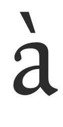 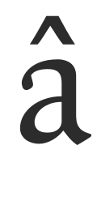 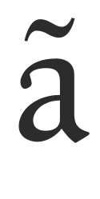 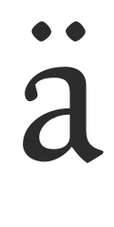 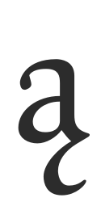 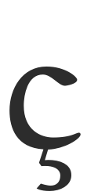 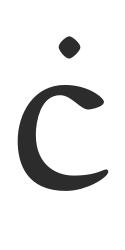 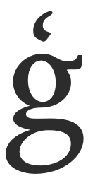 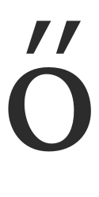
Некоторые примеры диакритических знаков
Нижний регистр ‘a with grave’ (unicode u+00e0). Создан в шрифте путем объединения нижнего регистра глифа ‘a’ (unicode u+0061) и глифа ‘combining grave accent’ (unicode u+0300).
Нижний регистр ‘a with circumflex’ (unicode u+00e2). Создан в шрифте путем объединения строчного глифа ‘a’ (unicode u+0061) и ‘combining circumflex accent’ глифа (unicode u+0302).
Нижний регистр ‘a with ogonek’ (unicode u+0105). Создан в шрифте путем объединения строчного глифа ‘a’ (unicode u+0061) и ‘combining ogonek’ глифа (unicode u+0328).
Нижний регистр ‘c with cedilla’ (unicode u+00e7). Создан в шрифте путем объединения строчного глифа ‘c’ (unicode u+0063) и ‘combining cedilla’ глифа (unicode u+0327).
Нижний регистр ‘o with double acute’ (unicode u+0151). Создан в шрифте путем объединения строчного глифа ‘o’ (unicode u+006f) и ‘combining double acute accent’ глифа (unicode u+030b).
FontForge может автоматически создавать акцентированные символы двумя основными способами.
- FontForge содержит элементарную информацию о том, где размещать диакритические знаки, поэтому может автоматически создавать большинство акцентированных символов.
- Для большего контроля над размещением диакритических знаков FontForge может размещать диакритические знаки в зависимости от положения созданных пользователем опорных точек.
Здесь следует отметить, что если не использовать привязки и таблицы поиска для размещения диакритических знаков, то, если глиф определенного диакритического знака отсутствует в шрифте, FontForge вместо этого будет использовать аналогичный символ пробела. Например, если знак объединения 'acutecomb' (u+0301) отсутствует, FontForge будет использовать стандартный символ 'acute' (u+00b4) при автоматическом построении любых глифов с острым ударением. Если 'acutecomb' присутствует, FontForge всегда будет использовать его, если только специально не заставить FontForge использовать пробелы для создания акцентированных глифов.
Базовое автоматическое размещение диакритических знаков в FontForge.
В меню ‘Element’ FontForge есть функция ‘Build’, которую можно использовать для создания символов с диакритическими знаками, некоторых составных символов и некоторых повторяющихся символов. Для автоматического создания акцентированных символов FontForge использует функцию ‘Element > Build > Build Accented Glyph’. Функцию также можно выполнить нажатием клавиши Ctrl + Shift + A. Итак, используя пример создания символа ‘a acute’ (u+00e1), нужно было бы уже создать строчную букву ‘a’ (u+0061) и глиф ‘acutecomb’ (u+0301). Затем, выбрав слот для символов ‘a acute’ и используя функцию ‘Element > Build > Build Accented Glyph’, FontForge поместит ссылку на строчный глиф ‘a’ и ссылку на глиф ‘acutecomb’ в слот для символов ‘a acute’ (смотреть ниже).
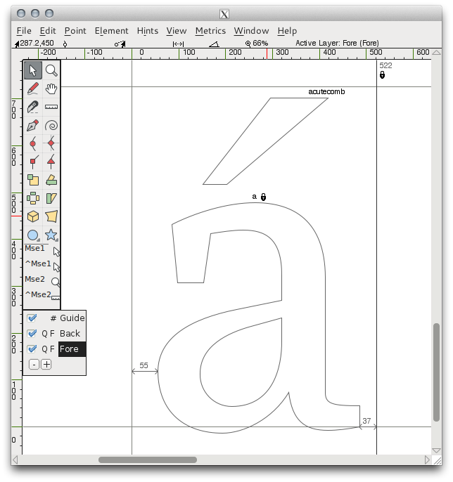
Автоматическое размещение диакритических знаков можно настроить с помощью настроек, которые можно найти в разделе ‘accents’ меню настроек FontForge ‘File > Preferences > Accents’ (смотреть ниже).
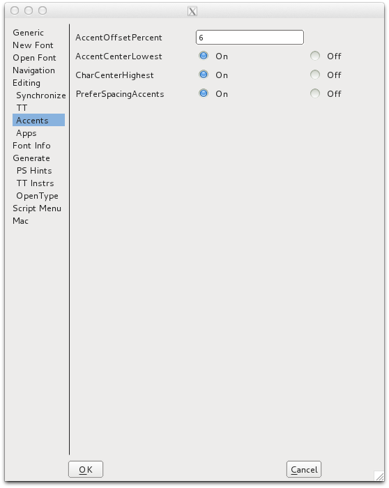
‘PreferSpacingCharacters’ заставит FontForge создавать акцентированные глифы с пробелами, даже если присутствуют соответствующие комбинирующие символы. Параметр игнорируется при использовании привязок для размещения диакритических знаков.
‘AccentOffsetPercent’ управляет количеством вертикального пространства между базовым глифом и глифом метки. Введенное здесь значение представляет собой процент от площади em шрифта. Таким образом, значение ‘6’ сместит глиф отметки относительно базового глифа на 6 процентов от квадрата em шрифта.
Также можно установить настройки горизонтального размещения значка знака. При выборе ‘On’ для предпочтения ‘AccentCenterLowest’ глиф акцента будет центрироваться по самой нижней точке базового глифа.
При выборе от ‘AccentCenterHighest’ до ‘On’ акцент будет центрироваться по самой высокой точке базового глифа.
Если выбрать оба вышеуказанных параметра для ‘Off’, акцент будет центрироваться по ширине базового глифа. Если выбрать обе вышеуказанные настройки для ‘On’, акцент будет центрироваться по ширине слота для символов.
Использование опорных точек для размещения диакритических знаков
Самый точный и эффективный способ создания акцентированных символов в FontForge — использовать ‘anchor points’.
Якорные точки позволяют точно контролировать точное расположение диакритического знака относительно каждого базового глифа в акцентированных символах. Таким образом, в случае символа ‘a ogonek’ базовый глиф ‘a’ будет располагаться нормально, а глиф метки ‘ogonek’ будет располагаться так, чтобы якорная точка глифа метки совпадала с опорной точкой в базовом глифе.
В приведенном ниже примере создания символа ‘a ogonek’ был создан класс привязки с именем ‘bottom’. В нижнем регистре глифа ‘a’ привязка ‘bottom’ размещается внизу основы ‘a’. Это форма привязки ‘base glyph’.
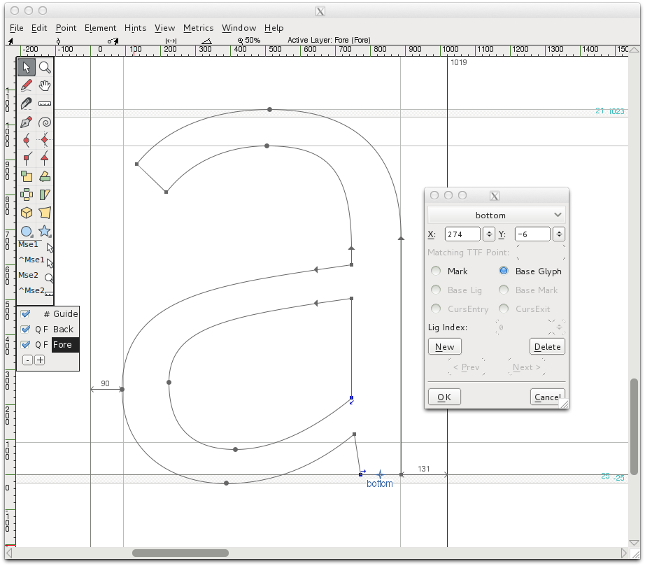
В глифе ‘ogonek’ якорь ‘bottom’ размещается вверху глифа огонек в форме якоря ‘mark’.
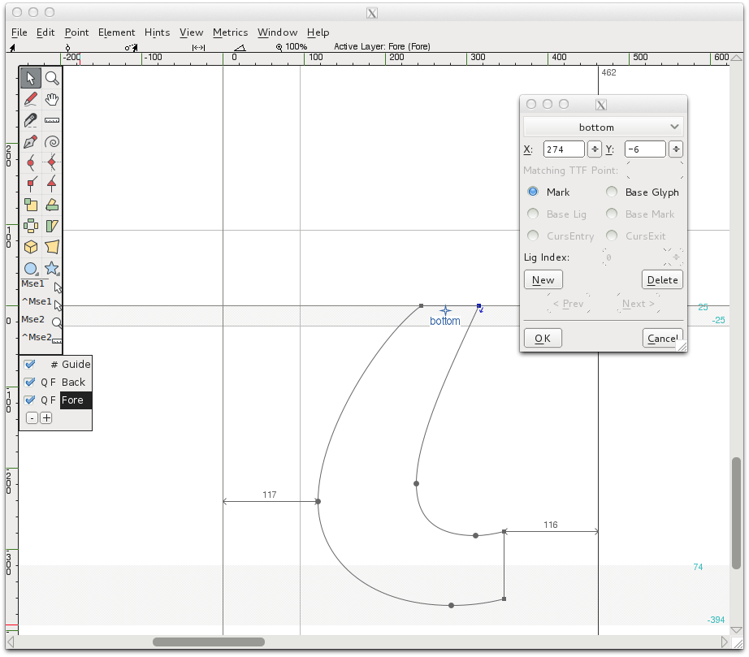
Затем, когда символ ‘a ogonek’ будет построен (с использованием функции ‘Build Accented Character’), якорная точка привязки метки ‘bottom’ будет помещена в то же место, что и базовая якорная точка ‘bottom’, с гарантией, что указанный глиф ogonek будет правильно размещен у подножия основы символа ссылки на глиф ‘a’. Такое точное и автоматическое размещение было бы невозможно без использования якорных точек для позиционирования основы и обозначения глифов.
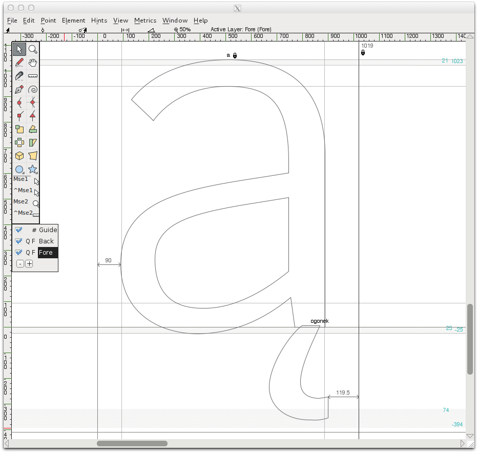
Создание якорных точек для размещения диакритических знаков (метка к базовому позиционированию)
FontForge используются функции поиска, известные как ‘mark-to-base’, для создания и позиционирования якорных точек. Эти запросы привязки к базе, можно создавать и редактировать в разделе Lookups GPOS информации о шрифте (‘Element > Font Info > Lookups > GPOS’).
В окне GPOS Lookups нажмите ‘Add Lookup’ и выбрать тип ‘Mark to Base Position’, затем выбрать ‘Mark Positioning’ в столбце ‘New’ на панели функций. Нажать ‘OK’, чтобы закрыть окно.
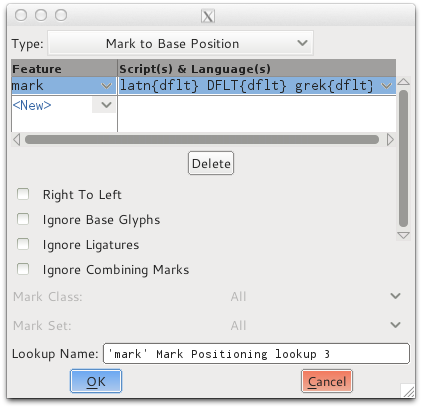
Выбрав новый поиск, нажать ‘Add Subtable’. В появившемся окне создать классы привязки.
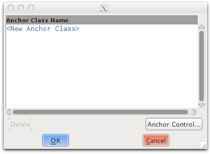
В этом примере были созданы два класса привязки: ‘top’ и ‘bottom’. Класс привязки ‘top’ будет использоваться для позиционирования диакритических знаков, размещаемых над глифами, а привязка ‘bottom’ будет использоваться для позиционирования знаков под глифами.
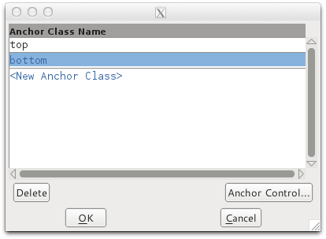
Чтобы разместить якорь с глифом, просто щелкните правой кнопкой мыши в окне редактирования глифа и выбрать функцию ‘Add Anchor’ в контекстном меню. Появившееся диалоговое окно позволяет указать, является ли привязка базовой или меточной. Положение якоря также можно точно настроить в этом диалоговом окне. Альтернативно якорь можно переместить, перетащив его в нужное положение с помощью мыши или используя клавиши со стрелками. Точку привязки также можно редактировать, щелкнув ее правой кнопкой мыши и выбрав ‘get info’ в контекстном меню мыши.
Управление классами привязки
FontForge также содержит полезный графический интерфейс для управления положением целых классов якорных точек, позволяя пользователю точно настроить положение, например, всех острых акцентов в шрифте одновременно или всех привязок в классе, содержащихся в символах, ссылающихся на строчную букву ‘e’. В приведенных ниже примерах можно увидеть, как использовать этот графический интерфейс для точной настройки положения всех острых акцентов в шрифте и класса привязок для всех символов, ссылающихся на строчный глиф ‘e’.
После того как созданы классы привязки в рамках поиска по позиции метки и добавили привязки к некоторым глифам, управлять этими классами из ‘Element > Font Info > Lookups > GPOS’, а затем редактировать подтаблицу, содержащую классы привязки. Затем видно это окно;
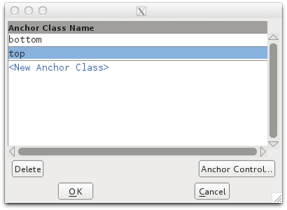
Отсюда выбор класса, который задача редактировать, и нажать кнопку ‘Anchor Control’. Затем будет представлен графический интерфейс этого класса. В примерах ниже редактирование элемента управления класса ‘top’. В первом примере в разделе ‘Bases’ раскрывающегося меню была выбрана строчная буква ‘e’. Если выбран базовый глиф, все символы, ссылающиеся на этот глиф и содержащие базовый якорь ‘top’, будут отображаться на панели предварительного просмотра. Затем можно настроить положение базовой привязки ‘top’, чтобы увидеть, как она влияет на положение всех глифов, содержащих привязку метки ‘top’.
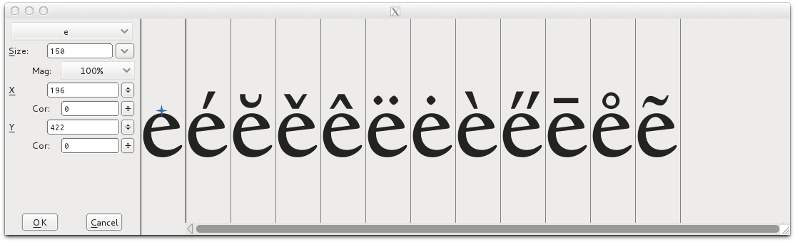
Во втором примере ниже глиф ‘acute’ был выбран в разделе ‘Marks’ раскрывающегося меню. Если выбран глиф метки, для предварительного просмотра будут отображаться все глифы, которые ссылаются на выбранный глиф и содержат привязку метки ‘top’.
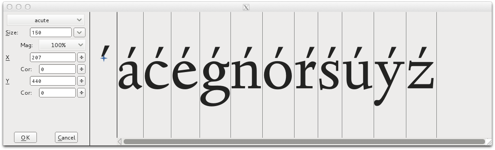